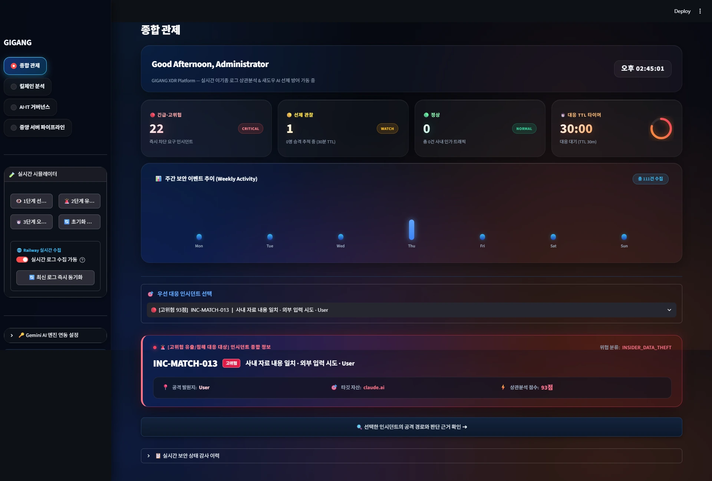
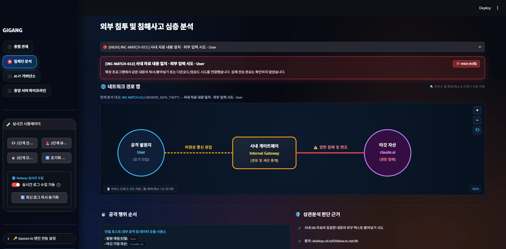
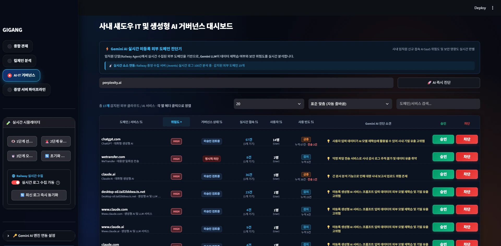
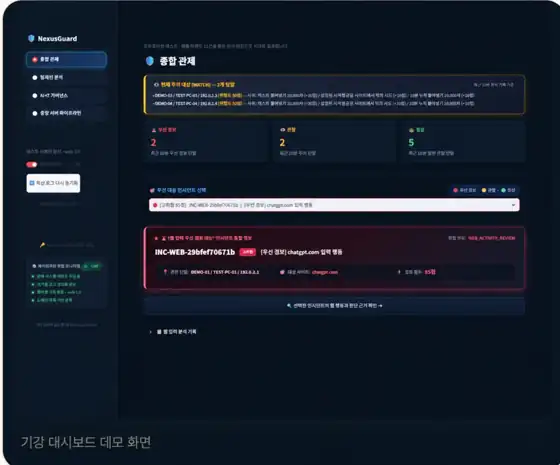

TEAM SECURITY PROJECT
GIGANG
Generative AI Inspection & Governance Across Network Gateways
사내 사용자의 외부 AI·SaaS 접근, 파일 입력 시도, DB 접근 이벤트를 함께 수집하고 위험 신호를 연결해 관리자 대응까지 이어지도록 만든 보안 팀 프로젝트입니다.
01 · PROBLEM
단순히 사이트를 막는 것보다, 어떤 행동이 이어졌는지를 보고 싶었습니다
외부 생성형 AI나 SaaS 접속 자체만으로는 위험 행동인지 판단하기 어렵습니다. 그래서 웹 접속 기록만 따로 보는 대신, DB 조회 → 웹 접근 → 붙여넣기·파일 입력 시도처럼 서로 다른 이벤트를 연결해 먼저 확인해야 할 상황을 좁히는 방향으로 설계했습니다.
웹·외부 서비스
외부 AI/SaaS 접속과 도메인 정보를 수집해 정책 상태와 함께 확인합니다.
DB 접근
사내 DB 조회 이력을 수집해 어떤 자료가 조회되었는지 판단 흐름에 연결합니다.
단말 이벤트
파일 선택·붙여넣기 등 외부 입력 시도를 감지해 서버 이벤트와 함께 봅니다.
관리자 대응
Normal / Watch / Critical 상태와 인시던트 근거를 대시보드에서 확인하도록 구성했습니다.
02 · FLOW
프로젝트 전체 흐름
웹 · DB · 파일 입력→ 이벤트 수집
단말 · Railway · DB 로그→ 규칙 · 상관분석
필요 시 AI 판단→ Normal / Watch / Critical
관리자 확인 · 대응
AI가 모든 이벤트를 처음부터 끝까지 결정하는 구조가 아니라, 알려진 정책과 이벤트 관계를 먼저 확인하고 추가 판단이 필요한 경우에만 AI 위험도 분석을 활용하는 방향으로 보완했습니다.
03 · MY ROLE
내가 맡은 부분
- 서버·DB 연동: 웹 접근 이벤트와 DB 접근 로그가 판단 단계로 전달되도록 수집 흐름을 연결했습니다.
- 상관분석 흐름: DB에서 본 자료와 이후 외부 입력 시도를 별개 이벤트로 끝내지 않고 함께 확인할 수 있도록 흐름을 정리했습니다.
- 판단 구조 보완: 외부 사이트를 매번 AI에 맡기는 방식 대신 알려진 SaaS 정책과 규칙 기반 판단을 우선하도록 구조를 수정했습니다.
- 단말 대응 연결: 사용자 PC에서 외부 AI 사이트로 자료를 입력하려는 행동이 감지됐을 때 경고·차단 안내로 이어지는 흐름을 연결했습니다.
- 운영 흐름 정리: 사용자용 실행과 관리자 관제 흐름을 분리하고, 실제 시연에서 이벤트가 어디에서 들어와 어디로 전달되는지 확인할 수 있도록 정리했습니다.
대시보드 전체 UI를 혼자 만든 프로젝트가 아니라 팀 프로젝트이며, 이 페이지에서는 팀 전체 결과와 제가 맡은 서버·DB·이벤트 연동 부분을 구분해 적었습니다.
04 · ITERATION
처음 구조에서 어떻게 바꿨는가
외부 사이트 위험도를 AI 판단에 크게 의존
접속한 도메인을 AI에 전달해 위험도를 판단하는 구조는 빠르게 구현할 수 있었지만, 이미 알고 있는 서비스까지 반복 호출할 수 있고 판단 근거가 시스템 정책과 분리되어 보이는 문제가 있었습니다.
정책·규칙 → 상관분석 → 필요한 경우 AI
승인된 SaaS와 알려진 정책을 먼저 적용하고, DB 조회·외부 입력 같은 이벤트 관계를 함께 확인한 뒤 미등록 서비스처럼 추가 판단이 필요한 경우에 AI를 활용하도록 역할을 줄였습니다.
이 변경으로 AI는 시스템의 모든 결정을 대신하는 역할이 아니라, 정책으로 바로 판단하기 어려운 부분을 보조하는 요소가 되도록 정리했습니다.
05 · IMPLEMENTATION
실제 구현 화면
아래 이미지는 팀 프로젝트의 실제 실행·관제 화면입니다. 시연용 목업이 아니라 구현 과정에서 사용한 화면을 포트폴리오에 정리했습니다.





06 · STACK & LIMITS
사용 기술과 범위
수집·서버
Python · Flask · Railway · 이벤트 API
데이터
MySQL · DB 접근 로그 · 이벤트 상관분석
단말·웹
Chrome Extension · 사용자 PC 이벤트 감지 · 차단 안내
관제·판단
Streamlit Dashboard · 정책 기반 분류 · Gemini 보조 판단
범위: 실제 기업 전체 보안 환경을 재현한 제품이 아니라 교육 팀 프로젝트의 테스트 환경에서 웹·DB·단말 이벤트가 하나의 관제 흐름으로 연결되는지를 구현하고 검증한 결과물입니다.